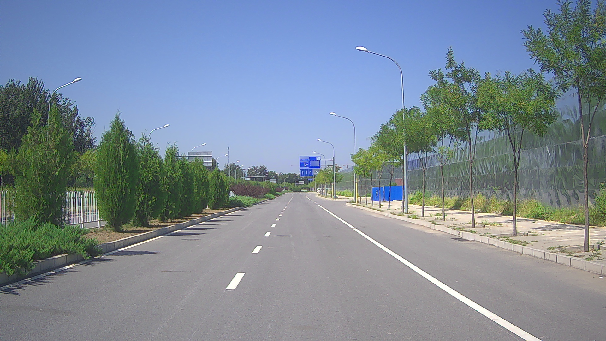
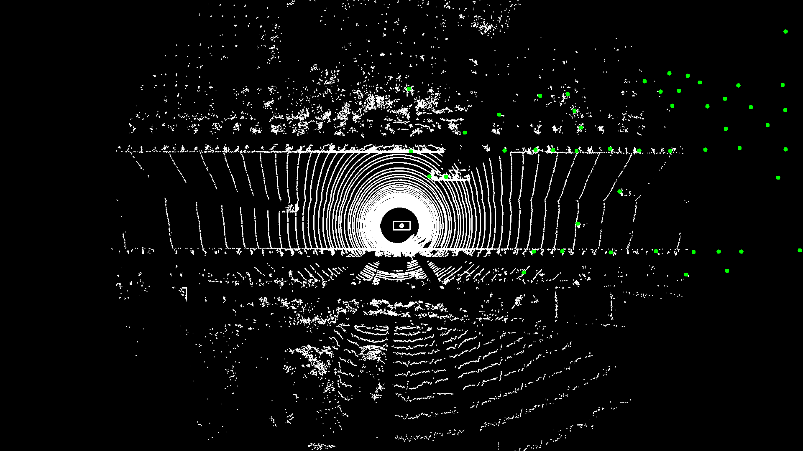

Apollo 2.0 Sensor Calibration Guide¶
This guide introduces the Apollo Sensor Calibration Service and describes the three new calibration tools in Apollo 2.0:
Camera-to-Camera Calibration
Camera-to-LiDAR Calibration
Radar-to-Camera Calibration
IMU-to-Vehicle Calibration
About This Guide¶
This guide provides the following information:
Overview
Preparation
Using the Calibration Tools
Obtaining Calibration Results
Validation Methods and Results
Overview¶
The new calibration tools in Apollo 2.0 (Camera-to-Camera Calibration, Camera-to-LiDAR Calibration, and Radar-to-Camera Calibration) are provided by an onboard executable program.For LiDAR-GNSS calibration, please refer to the LiDAR-IMU calibration guide. Velodyne HDL-64 users can also use the calibration service in Apollo 1.5.
The benefit in using these tools is that they reduce the amount of work that the user must do. The user only has to start the corresponding calibration program, and the calibration work is performed and completes in real time. The user can then verify the calibration results, which are provided as .yaml files.
Preparation¶
Download calibration tools, and extract files to $APOLLO_HOME/modules/calibration. APOLLO_HOME is the root directory of apollo repository.
Well Calibrated Intrinsics of Camera¶
Camera intrinsics contain focus length, principal points, distortion coefficients, and other information. Users can obtain the intrinsics from other camera calibration tools such as the ROS Camera Calibration Tools and the Camera Calibration Toolbox for Matlab. After the calibration is completed, users should convert the result to a specific yaml format file manually.
Users must ensure that the K and D data is correct:
Krefers to the camera matrixDrefers to the distortion parameters
The following is an example of a camera intrinsic file:
header:
seq: 0
stamp:
secs: 0
nsecs: 0
frame_id: short_camera
height: 1080
width: 1920
distortion_model: plumb_bob
D: [-0.535253, 0.259291, 0.004276, -0.000503, 0.0]
K: [1959.678185, 0.0, 1003.592207, 0.0, 1953.786100, 507.820634, 0.0, 0.0, 1.0]
R: [1.0, 0.0, 0.0, 0.0, 1.0, 0.0, 0.0, 0.0, 1.0]
P: [1665.387817, 0.0, 1018.703332, 0.0, 0.0, 1867.912842, 506.628623, 0.0, 0.0, 0.0, 1.0, 0.0]
binning_x: 0
binning_y: 0
roi:
x_offset: 0
y_offset: 0
height: 0
width: 0
do_rectify: False
It is recommended that you perform the intrinsic calibration for every single camera instead of using unified intrinsic parameters for every camera. If you follow this practice, you can improve the accuracy of the extrinsic calibration results.
Initial Extrinsic File¶
The tools require the user to provide an initial extrinsic value as a reference.
The following is an example of an initial extrinsic file of Camera-to-LiDAR, where translation is the shift distance between the camera and LiDAR. The rotation is the quaternion expression form of the rotation matrix.
header:
seq: 0
stamp:
secs: 0
nsecs: 0
frame_id: velodyne64
child_frame_id: short_camera
transform:
rotation:
y: 0.5
x: -0.5
w: 0.5
z: -0.5
translation:
x: 0.0
y: 1.5
z: 2.0
NOTE: The Camera-to-LiDAR Calibration is more dependent on initial extrinsic values. A large deviation can lead to calibration failure. Therefore, it is essential that you provide the most accurate, initial extrinsic value as conditions allow.
Calibration Site¶
Because the Camera-to-LiDAR Calibration method is used in natual environment, a good location can significantly improve the accuracy of the calibration. It is recommended that you select a calibration site that includes objects such as trees, poles, street lights, traffic signs, stationary objects, and clear traffic lines.
Figure 1 is an example of a good choice for a calibration site:

Figure 1. Good Choice for a Calibration Site
Required Topics¶
Users must confirm that all sensor topics required by the program have output messages. For more information, see: How to Check the Sensor Output?
The sensor topics that the on-board program requires are listed in Tables 1, 2, and 3.
Table 1. The Required Topics of Camera-to-Camera Calibration
Sensor |
Topic Name |
Topic Feq. (Hz) |
|---|---|---|
Short_Camera |
/apollo/sensor/camera/traffic/image_short |
9 |
Long_Camera |
/apollo/sensor/camera/traffic/image_long |
9 |
INS |
/apollo/sensor/gnss/odometry |
100 |
INS |
/apollo/sensor/gnss/ins_stat |
2 |
Table 2. The Required Topics of Camera-to-LiDAR Calibration
Sensor |
Topic Name |
Topic Feq. (Hz) |
|---|---|---|
Short_Camera |
/apollo/sensor/camera/traffic/image_short |
9 |
LiDAR |
/apollo/sensor/velodyne64/compensator/PointCloud2 |
10 |
INS |
/apollo/sensor/gnss/odometry |
100 |
INS |
/apollo/sensor/gnss/ins_stat |
2 |
Table 3. The Required Topics of Radar-to-Camera Calibration
Sensor |
Topic Name |
Topic Feq. (Hz) |
|---|---|---|
Short_Camera |
/apollo/sensor/camera/traffic/image_short |
9 |
INS |
/apollo/sensor/gnss/odometry |
100 |
INS |
/apollo/sensor/gnss/ins_stat |
2 |
Using the Calibration Tools¶
This section provides the following information to use the three calibration tools:
Commands to run each tool
Data collection guidelines
Location of the configuration file
Types of data output
Before you begin to use the tools, you must verify that the localization status is 56 or the calibration tools (programs) will not collect data.
Type the following command to check localization status:
rostopic echo /apollo/sensor/gnss/ins_stat
Camera-to-Camera Calibration Tool¶
Run the Camera-to-Camera Calibration Tool using these commands:
cd /apollo/scripts
bash sensor_calibration.sh camera_camera
Follow these guidelines to collect data:
Because the two cameras have different timestamps, they cannot be completely synchronized, so it is important to drive the vehicle very slowly when recording the data. The slow speed of the vehicle can effectively alleviate the image mismatch that is caused by the different timestamps.
Make sure to enable a large enough overlap of the regions of the two camera images or the tool will not be able to perform the extrinsic calibration operation.
Note the location of the configuration file:
/apollo/modules/calibration/camera_camera_calibrator/camera_camera_calibrtor.conf
Table 4 identifies and describes each element in the configuration file.
Table 4. Camera-to-Camera Calibration Configuration Description
Configuration |
Description |
|---|---|
long_image_topic |
telephoto camera image topic |
short_image_topic |
wide-angle camera image topic |
odometry_topic |
vehicle vodometry topic |
ins_stat_topic |
vehicle locolization status topic |
long_camera_intrinsics_filename |
intrinsic file of telephoto camera |
short_camera_intrinsics_filename |
intrinsic file of wide-angle camera |
init_extrinsics_filename |
initial extrinsic file |
output_path |
calibration results output path |
max_speed_kmh |
limitation of max vehicle speed, unit: km/h |
The types of output from the Camera-to-Camera Calibration Tool are:
The calibrated extrinsic file, provided as a
.yamlfile.Validation images that include:
An image captured by the telephoto camera.
An image captured by the wide-angle camera.
A warp image blended with an undistorted wide-angle camera image and an undistorted telephoto camera image.
Camera-to-LiDAR Calibration¶
Run the Camera-to-LiDAR Calibration Tool using these commands:
cd /apollo/scripts
bash sensor_calibration.sh lidar_camera
Follow these guidelines to collect data:
Because the two cameras have different timestamps, they cannot be completely synchronized, so it is important to drive the vehicle very slowly when recording the data. The slow speed of the vehicle can effectively alleviate the image mismatch that is caused by the different timestamps.
Make sure that there are a certain number of (over 500) projection points in the camera image, or the tool cannot perform the extrinsic calibration operation. For this reason, this tool is only for wide angle cameras.
Note the location of the saved configuration file:
/apollo/modules/calibration/lidar_camera_calibrator/camera_camera_calibrtor.conf
Table 5 identifies and describes each element in the configuration file.
Table 5. Camera-to-LiDAR Calibration Configuration Description
Configuration |
Description |
|---|---|
camera_topic |
wide-angle camera image topic |
lidar_topic |
LiDAR point cloud topic |
odometry_topic |
vehicle odometry topic |
ins_stat_topic |
vehicle localization status topic |
camera_intrinsics_filename |
intrinsic file of camera |
init_extrinsics_filename |
initial extrinsic file |
output_path |
calibration results output path |
calib_stop_count |
required stops of capturing data |
max_speed_kmh |
limitation of max vehicle speed, unit: km/h |
The types of output from the Camera-to-LiDAR Calibration Tool are:
The calibrated extrinsic file, provided as a
.yamlfileTwo validation images that project the LiDAR point cloud onto a camera image:
One image is colored with depth
One image is colored with intensity
Radar-to-Camera Calibration¶
Run the Radar-to-Camera Calibration Tool using these commands:
cd /apollo/scripts
bash sensor_calibration.sh radar_camera
Follow this guideline to collect data:
Drive the vehicle at a low speed and in a straight line to enable the calibration tool to capture data only under this set of conditions.
Note the location of the saved configuration file:
/apollo/modules/calibration/radar_camera_calibrator/conf/radar_camera_calibrtor.conf
Table 6 identifies and describes each element in the configuration file.
Table 6. Radar-to-Camera Calibration Configuration Description
Configuration |
Description |
|---|---|
camera_topic |
wide angle camera image topic |
odometry_topic |
vehicle odometry topic |
ins_stat_topic |
vehicle locolization status topic |
camera_intrinsics_filename |
intrinsic file of camera |
init_extrinsics_filename |
initial extrinsic file |
output_path |
calibration results output path |
max_speed_kmh |
limitation of max vehicle speed, unit: km/h |
The types of output from the Radar-to-Camera Calibration tool are:
The calibrated extrinsic file, provided as a
.yamlfileA validation image that includes the projection result from Radar-to-LiDAR. You need to run the
radar_lidar_visualizertool to generate the image. See [Radar LiDAR Visualizer Projection Tool](####Radar LiDAR Visualizer Projection Tool) for more information.
IMU-to-Vehicle Calibration¶
Download the calibration tool.
Start the vehicle to move before calibration. The vehicle should keep going straight at speed of 3m/s for 10s at least. There is no need to provide the intrinsic and initial extrinsic.
Required topic: INS /apollo/sensors/gnss/odemetry 100Hz
Run the IMU-to-Vehicle Calibration using these commands:
cd /apollo
bash scripts/sensor_calibration.sh imu_vehicle
The result is saved as vehicle_imu_extrinsics.yaml in current path. Here is an example:
header
seq: 0
stamp:
secs: 1522137131
nsecs: 319999933
frame_id: imu
transform:
translation:
x: 0.0
y: 0.0
z: 0.0
rotation:
x: -0.008324888458427
y: -0.000229845441991
z: 0.027597957866274
w: 0.999584411705604
child_frame_id: vehicle
#pitch install error: -0.954337
#roll install error: 0.000000
#yaw install error: 3.163004
(Optional) Run All Calibration Tools¶
If necessary, users can run all calibration tools using these commands:
cd /apollo/scripts
bash sensor_calibration.sh all
Obtaining Calibration Results¶
All calibration results are saved under the output path in the configuration files, and they are provided in yaml format. In addition, depending on the sensor, the calibration results are stored in different folders in the output directory as shown in Table 7:
Table 7. Path of Saved Calibration Results for Each Sensor
Sensor |
Path for Saved Results |
|---|---|
Short_Camera |
[output]/camera_params |
Long_Camera |
[output]/camera_params |
Radar |
[output]/radar_params |
Validation Methods and Results¶
When the calibration is complete, the corresponding calibration result verification image is generated in the [output]/validation directory.
This section provides the background information and the corresponding validation method to use to evaluate verification images for each calibration tool.
Camera-to-Camera Calibration¶
Background Information: In the warp image, the green channel is produced from the wide-angle camera image, and the red and blue channels are produced from the telephoto camera image. Users can compare the alignment result of the warp image to validate the precision of the calibrated extrinsic parameter.
Validation Method:
In the fusion area of the warp image, judge the alignment of the scene 50 meters away from the vehicle. If the images coincide completely, the extrinsic parameter is satisfactory. However, if a pink or green ghost (displacement) appears, the extrinsic parameter is in error.
When the error is greater than a certain range (for example, 20 pixels, determined by the actual usage), you need to re-calibrate the extrinsic parameter. Under general circumstances, due to the parallax, some dislocations may occur in the horizontal with close objects, but the vertical direction is not affected. This is a normal phenomenon.
**Examples: **As shown in the following examples, Figure 2 meets the precision requirements of the extrinsic parameter, and Figure 3 does not.
 Figure 2. Good Calibration Result for Camera-to-Camera Calibration
Figure 2. Good Calibration Result for Camera-to-Camera Calibration
 Figure 3. Bad Calibration Result for Camera-to-Camera Calibration
Figure 3. Bad Calibration Result for Camera-to-Camera Calibration
Camera-to-LiDAR Calibration¶
Background Information: In the point cloud projection images, users can see objects and signs with obvious edges and compare the alignment.
Validation Method: If the target is within 50 meters, its edge of point cloud can coincide with the edge of the image, and the accuracy of the calibration results can be proved to be very high. However, if there is a misplacement, the calibration results are in error. The extrinsic parameter is not available when the error is greater than a certain range (for example, 5 pixels, depending on the actual usage).
Examples: As shown in the following examples, Figure 4 meets the precision requirements of the extrinsic parameter, and Figure 5 does not.

Figure 4. Good Camera-to-LiDAR Calibration Validation Result

Figure 5. Bad Camera-to-LiDAR Calibration Validation Result
Radar-to-Camera Calibration¶
Background Information: To verify the extrinsic output, use the LiDAR in the system as a medium. This approach enables you to obtain:
The extrinsic parameter of the radar relative to the LiDAR through the extrinsic value of the radar relative to the camera
The extrinsic value of the camera relative to the LiDAR
You can then draw a bird’s-eye-view fusion image, which fuses the radar data and the LiDAR data in the LiDAR coordinate system. You can use the alignment of the radar data and the LiDAR data in the bird’s-eye-view fusion image to judge the accuracy of the extrinsic parameter. In the fusion image, all of the small white points indicate the LiDAR point cloud, while the large green solid circles indicate radar objects.
Validation Method:
The alignment of the radar object and the LiDAR data in the bird’s-eye-view fusion image shows the accuracy of the extrinsic parameter. If most of the targets coincide, it is satisfactory. However, if over 40% targets (especially vehicles) do not align, it is not satisfactory and you need to re-calibrate.
Examples: As shown in the following examples, Figure 6 meets the precision requirements of the extrinsic parameter, and Figure 7 does not.

Figure 6. Good Camera-to-Radar Calibration Validation Result

Figure 7. Bad Camera-to-Radar Calibration Validation Result
Radar LiDAR Visualizer Projection Tool¶
To obtain the fusion image of the radar data and the LiDAR point cloud, the calibration process automatically (if using bash sensor_calibration.sh all) or manually (if using bash sensor_calibration.sh visualizer) calls another projection tool, the radar_lidar_visualizer. The projection tool loads the extrinsic files of the Radar-to-Camera and the Camera-to-LiDAR.
IMPORTANT: Before the projection tool starts, make sure that the two extrinsic parameters are well calibrated and exist in the specific path set in the configuration file (radar_camera_extrinsics_filename and camera_lidar_extrinsics_filename).
Run the
radar_lidar_visualizerprogram using these commands:
cd /apollo/scripts
bash sensor_calibration.sh visualizer
Note the saved location of the configuration file of
radar_lidar_visualizer:
/apollo/modules/calibration/radar_lidar_visualizer/conf/radar_lidar_visualizer.conf
Table 8 identifies and describes each element in the projection tool configuration file.
Table 8. Projection Tool Radar-to-LiDAR Configuration Description
Configuration File |
Description |
|---|---|
radar_topic |
Radar data topic |
lidar_topic |
LiDAR point cloud topic |
radar_camera_extrinsics_filename |
Calibrated extrinsic of Radar-to-Camera |
camera_lidar_extrinsics_filename |
Calibrated extrinsic of Camera-to-LiDAR |
output_path |
Validation results output path |
Note the location of the saved validation image:
[output]/validation